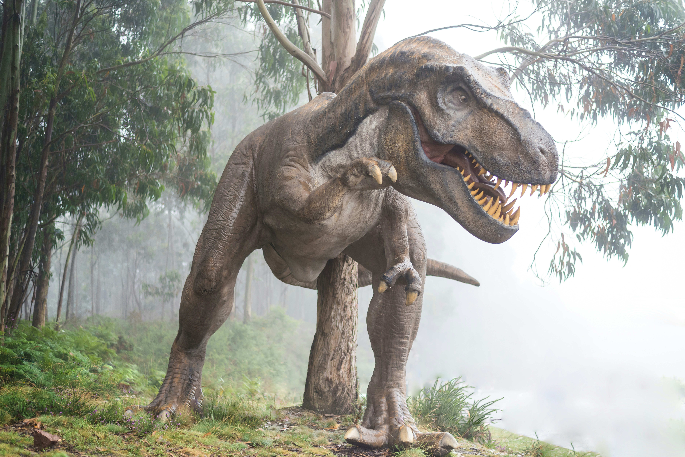

Descubre información sobre tus Dinosaurios favoritos
Hace millones y millones de años, en el planeta Tierra, había un conjunto de criaturas de distintas especies, tamaños, pesos y colores. Muchos los consideran los primeros habitantes de este planeta, y aquí conocerás un poco más sobre ellos. En DinoMundo te contamos qué fue de la vida y de la historia de nuestros primeros amigos, los dinosaurios.

Este sitio web tendrá distintos apartados donde estarán señaladas varias informaciones que son interesantes.
Si quieres saber más sobre el universo de los dinosaurios en específico te recomiendo el siguiente listado de sitios web que son interesantes.
Dinosaurland- National Geographic- Jurassic World- Muy Interesante